L'indirizzo è Via Capo Falcone 11, Stintino. Fermatevi con l'auto davanti al cancello principale.
Una persona scende e entra a piedi dal piccolo cancelletto pedonale sulla sinistra (è sempre aperto).
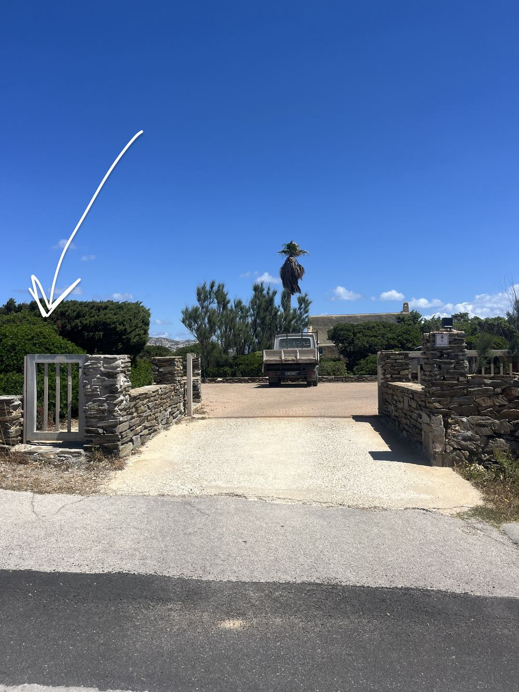
Entrati nel piazzale, andate avanti verso destra fino alla bacheca di legno.
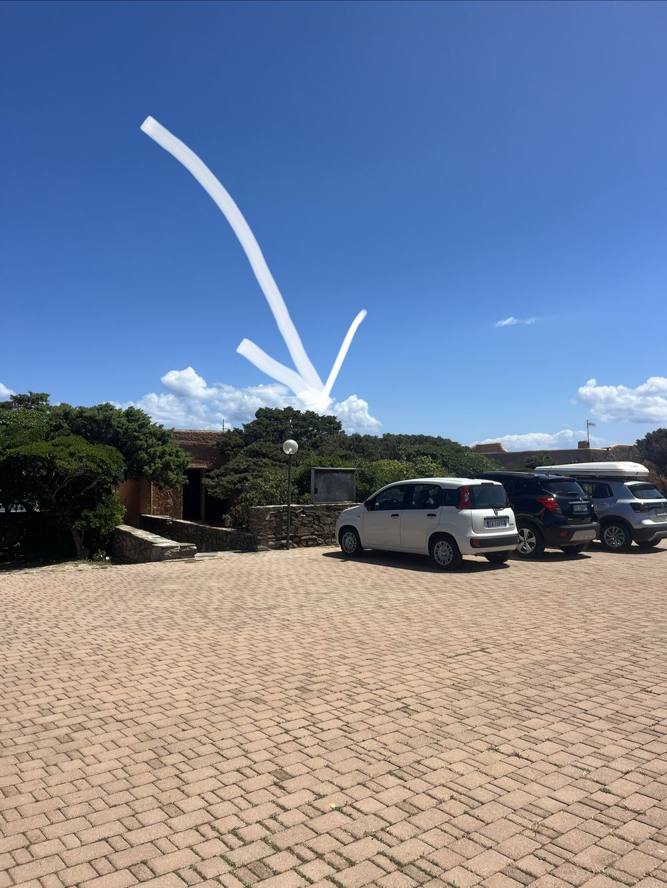
Sul lato sinistro della bacheca trovate un piccolo locker nero.
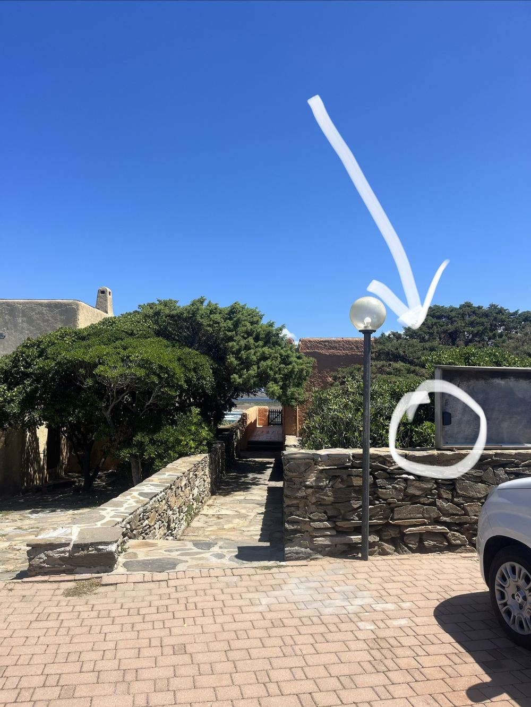
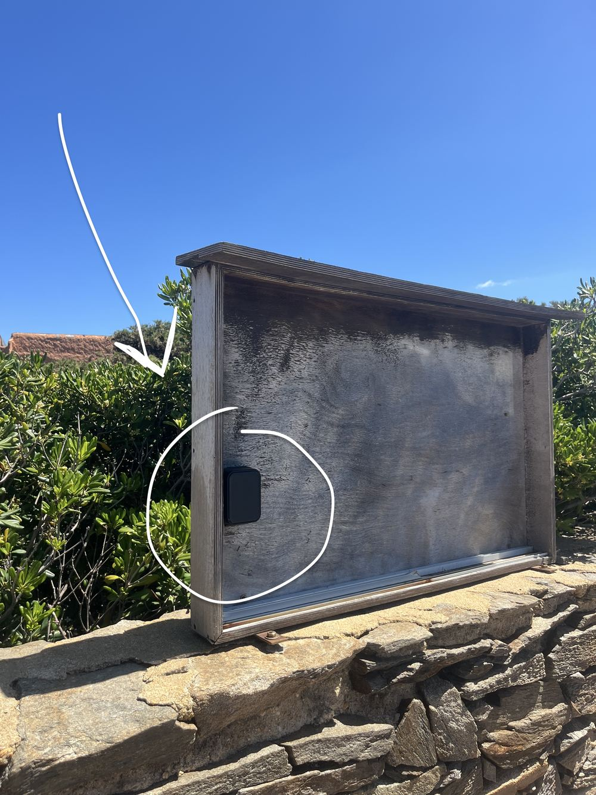
Dentro trovate il mazzo di chiavi della casa.
Tornate all'auto. A fianco al cancello carrabile, sul muretto in pietra, c'è una serratura.
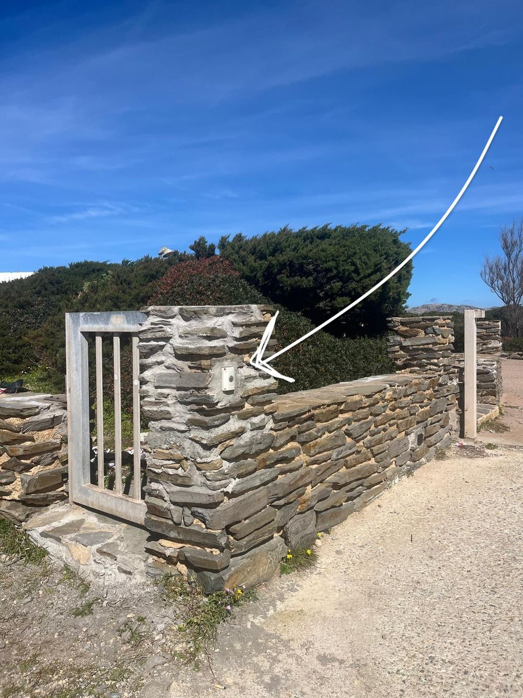
Il cancello si apre da solo. Entrate, e si richiude da solo dopo qualche secondo.
Dalla bacheca di legno, dirigetevi a sinistra verso i primi scalini.
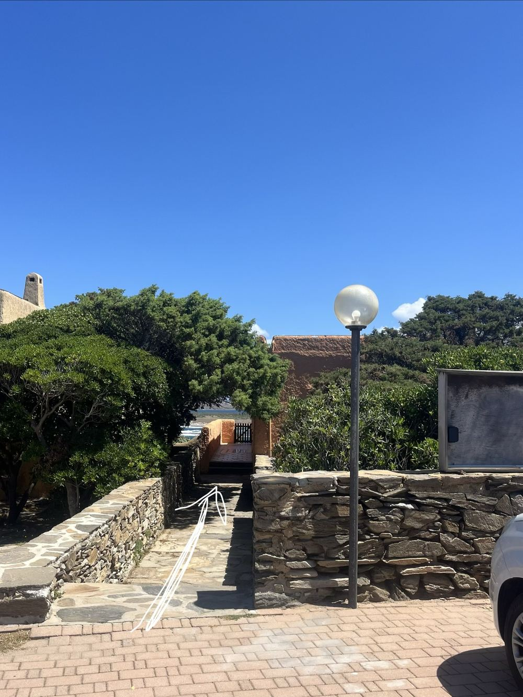
Scendete, girate a sinistra, e continuate a scendere tenendo la destra. Il percorso passa tra le case in pietra con vista sul mare.
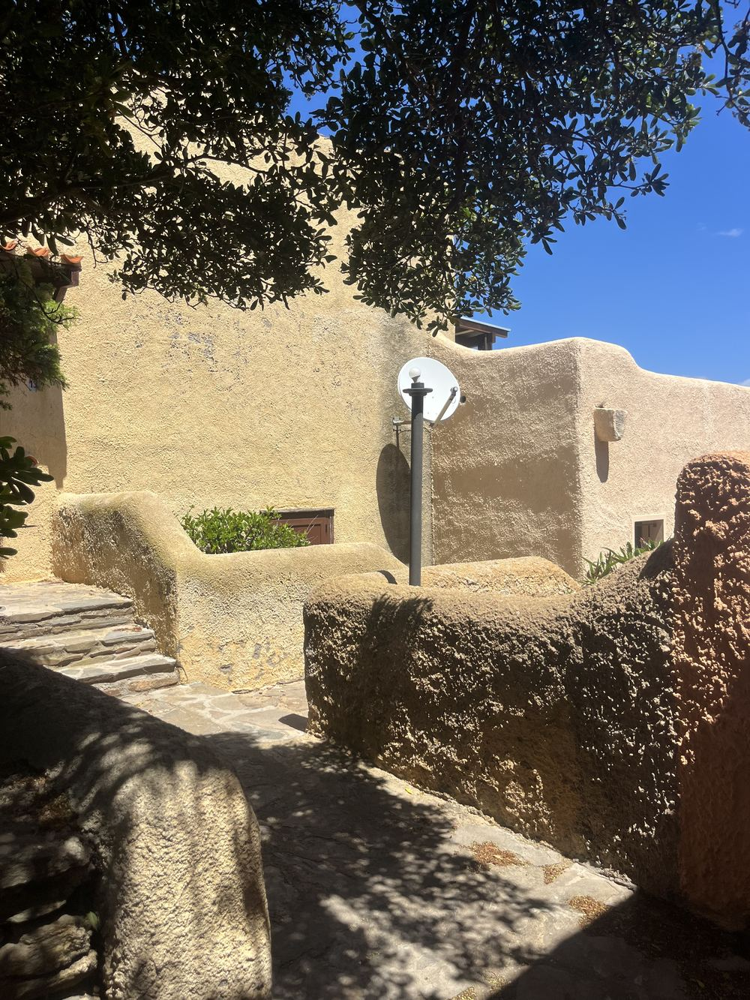
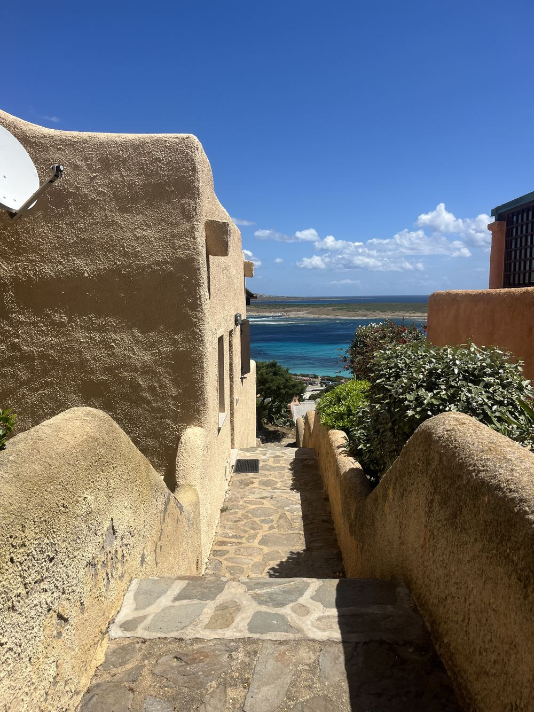
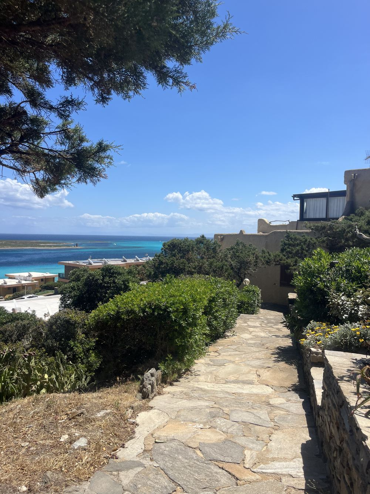
Alla fine arrivate alla scalinata che porta all'interno n. 8.
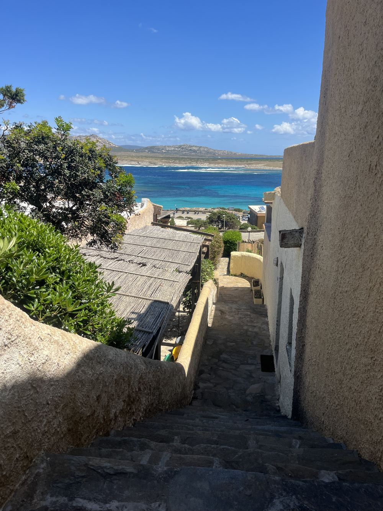
L'ingresso si trova scendendo a sinistra sotto il pergolato di canne.
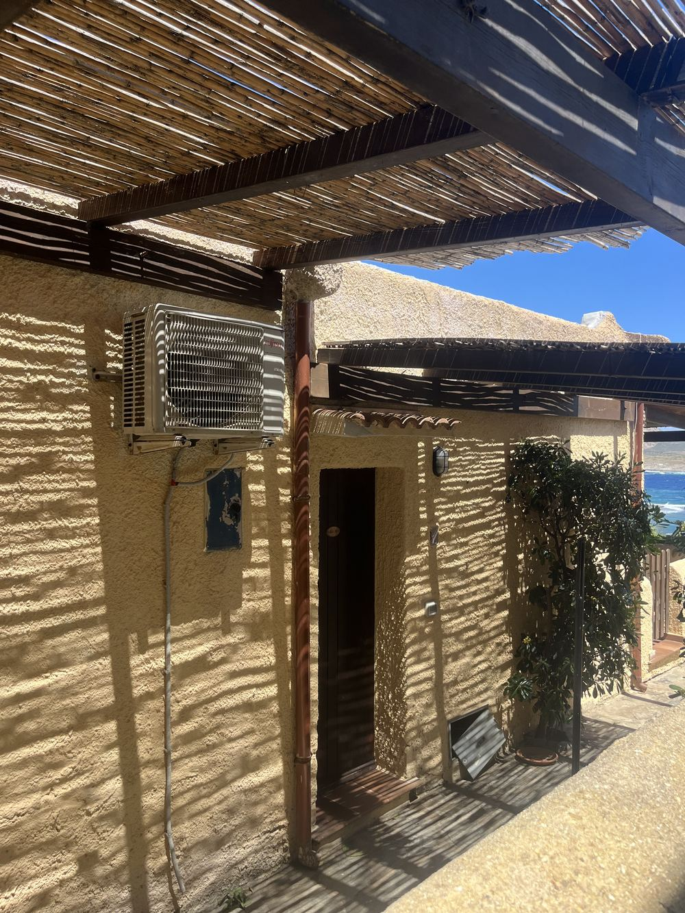
Riconoscerete la porta dalla targhetta "Fam. Lai" e dalla maniglia a forma di cavalluccio marino 🐎
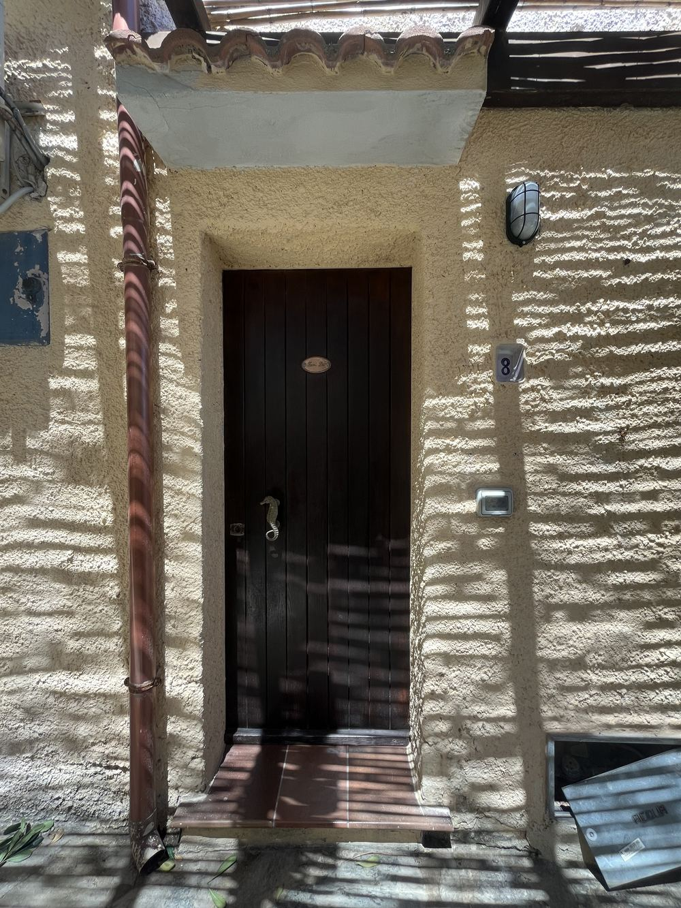
Aprite con la chiave grande del mazzo. Benvenuti! 🎉
Niente panico. Sul pilastro di legno davanti alla porta c'è un secondo locker bianco con un mazzo di chiavi di scorta. Il codice è lo stesso del primo locker (quello che vi abbiamo inviato via WhatsApp).
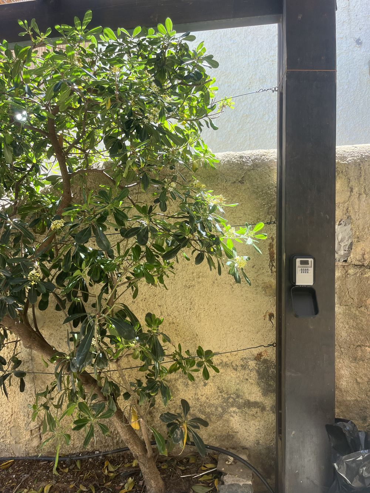
Se avete bisogno di qualunque cosa, chiamate o scrivete su WhatsApp: